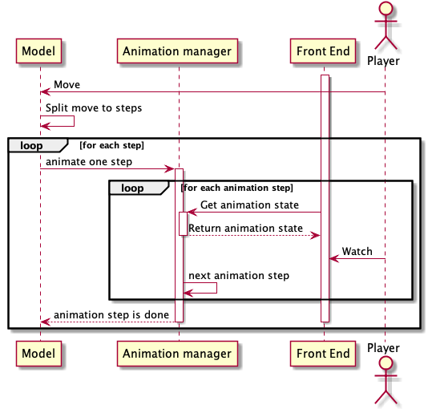

How it's working
All animation related classes are in package org.microcol.gui.panelview and org.microcol.gui.util.
Game animation
This part is about main animation like ship moving. When event should be animated than there is extension of AnimationPart. Behavior of method in animation part implementations should be following:
When some event should be animated than it's added to AnimationManager. AnimationManager is called each time screen is redrawn.
Game model basic events
Game model represents game instance. It controls game logic and keep game consistency. Following diagram show how events describe game lifecycle.
Animation manager
Animation manager is responsible for providing information about animation to front end which is periodically repainted. When animation is added called thread is blocked until animation is finished.
Model have to split move animation into several small steps. Each step have to painted and than step should be reflected in model. It helps keep state of front and model in similar state.